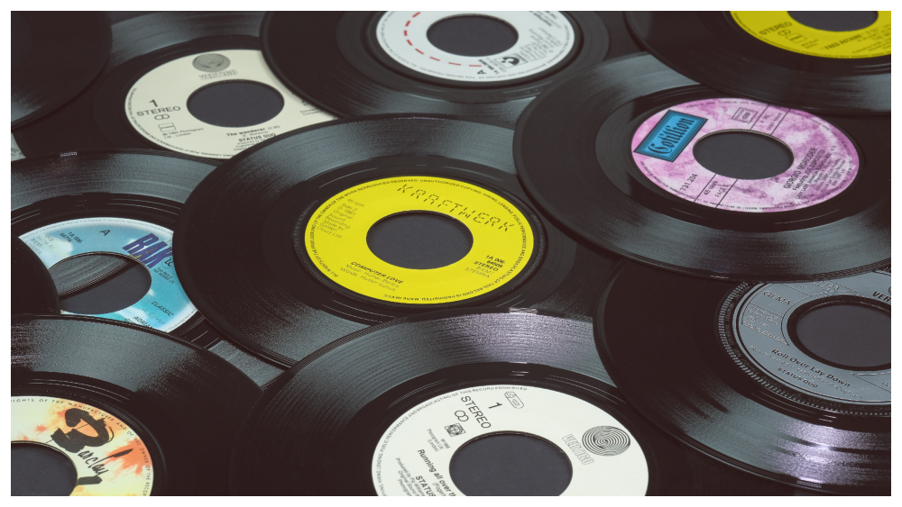

Surgeon- Shell Wave



Género: Unknown
Sello: Tresor
Año: 2023-03-17
Total de pistas: 8
Información de Producción
| Campo | Información |
|---|---|
| Sello | Tresor |
| Año | 2023-03-17 |
| Género | Unknown |
| Total de pistas | 8 |
| Productores | Anthony Child |
| Masterización | Michelle Grinser |
| Artwork | Claude Eden |
| Lacquer Cut By | Michelle Grinser |
| Mastered By | Michelle Grinser |
| Written-By, Producer | Anthony Child |
Tracklist
1. Oak Bank [6:36] | 🎵 Spotify • 📺 YouTube • 📔 Letras
2. Second Magnitude Stars [6:41] | 🎵 Spotify • 📺 YouTube
3. Metal Pig [6:55] | 🎵 Spotify • 📺 YouTube
4. We Laugh and Clap at the Circus [5:40] | 🎵 Spotify • 📺 YouTube
5. Leadership Contest [6:33] | 🎵 Spotify • 📺 YouTube
6. Masks & Archetypes [6:17] | 🎵 Spotify • 📺 YouTube
7. Subcultures [5:58] | 🎵 Spotify • 📺 YouTube
8. Hope Not Hate [5:57] | 🎵 Spotify • 📺 YouTube
Instrumentos y Equipos
| Tipo | Marca | Modelo | Año | Precio | Puntuación | Enlaces |
|---|---|---|---|---|---|---|
| unknown | 1010music | Blackbox | 2025 | $200+ | - | 🎛️ Equipboard |
| synthesizer | 1010music | Nanobox Lemondrop Granular Synthesizer Module | 2025 | - | - | 🎛️ Equipboard |
| unknown | Aiwa | XD-S1100 | 2025 | - | - | 🎛️ Equipboard |
| unknown | Boss | SX-700 Studio Effects Processor | 2025 | - | - | 🎛️ Equipboard |
| unknown | Doepfer | MAQ 16/3 MIDI Analogue Sequencer | 2025 | - | - | 🎛️ Equipboard |
| unknown | Electro-Harmonix | 45000 Multi-Track Looping Recorder | 2025 | - | - | 🎛️ Equipboard |
| unknown | Elektron | Octatrack DPS-1 | 2025 | - | - | 🎛️ Equipboard |
| unknown | Ensoniq | DP/2 | 2025 | - | - | 🎛️ Equipboard |
| unknown | Eventide | H3000 D/SE Ultra Harmonizer | 2025 | - | - | 🎛️ Equipboard |
| unknown | Focusrite | Platinum Compounder | 2025 | - | - | 🎛️ Equipboard |
| bass_guitar | Hexinverter | Mutant Bassdrum | 2025 | - | - | 🎛️ Equipboard |
| unknown | Hexinverter | Mutant Hi Hats | 2025 | - | - | 🎛️ Equipboard |
| unknown | L.E.P. | Leploop V2 | 2025 | - | - | 🎛️ Equipboard |
| unknown | Lexicon | PCM-91 | 2025 | - | - | 🎛️ Equipboard |
| unknown | Music | Thing Modular Mikrophonie | 2025 | - | - | 🎛️ Equipboard |
| unknown | Norand | Mono | 2025 | - | - | 🎛️ Equipboard |
| unknown | Nord | Lead 1 | 2025 | - | - | 🎛️ Equipboard |
| unknown | Oto | Machines BIM | 2025 | - | - | 🎛️ Equipboard |
| unknown | Oto | Machines Boum | 2025 | - | - | 🎛️ Equipboard |
| unknown | Roland | Boutique SH-01A | 2025 | - | - | 🎛️ Equipboard |
| unknown | Roland | TR-909 Rhythm Composer | 2025 | - | - | 🎛️ Equipboard |
| unknown | Soma | Laboratory LYRA-8 | 2025 | - | - | 🎛️ Equipboard |
| unknown | Soma | Laboratory PULSAR-23 | 2025 | - | - | 🎛️ Equipboard |
| unknown | Tiptop | Audio Trigger Riot | 2025 | - | - | 🎛️ Equipboard |
| microphone | Torso | Electronics T1 Algorithmic Sequencer | 2025 | $200+ | - | 🎛️ Equipboard |
Reviews y Menciones
📰 Menciones en Medios
| Medio | Título | Fecha |
|---|---|---|
| theguardian.com | [Sharon Van Etten: Remind Me Tomorrow review – a consummate surgeon of relationships | Pop and rock |
| ra.co | Thom Yorke - ANIMA · Album Review ⟋ RA | 04/08/2025 |
| loudandquiet.com | Helena Hauff - Qualm - Album review - Loud And Quiet | 26/05/2025 |
| godisinthetvzine.co.uk | Roísín Murphy - Hit Parade (Ninja Tune) - God Is In The TV | 26/05/2025 |
| independent.co.uk | [Roisin Murphy, Hit Parade review: Amid controversy comes some of the singer’s most euphoric, danceable music | The Independent](https://www.independent.co.uk/arts-entertainment/music/reviews/roisin-murphy-hit-parade-review-b2402596.html) |
📝 Reviews y Artículos
| Fuente | Título | Fecha | Origen |
|---|---|---|---|
| albumoftheyear.org | AOTY Summary - Surgeon - Crash Recoil (User: 72/Critic: 75) | 05/08/2025 | review_aoty |
| metacritic.com | Metacritic Summary - Surgeon - Crash Recoil (Score: 87) | 05/08/2025 | review_metacritic |
⭐ Puntuaciones y Críticas
| Plataforma | Puntuación Críticos | Puntuación Usuarios | Enlaces |
|---|---|---|---|
| Album of the Year | 75/100 (2 reviews) | 72/100 | 🔗 AOTY |
| Metacritic | 87/100 | - | 🔗 Metacritic |